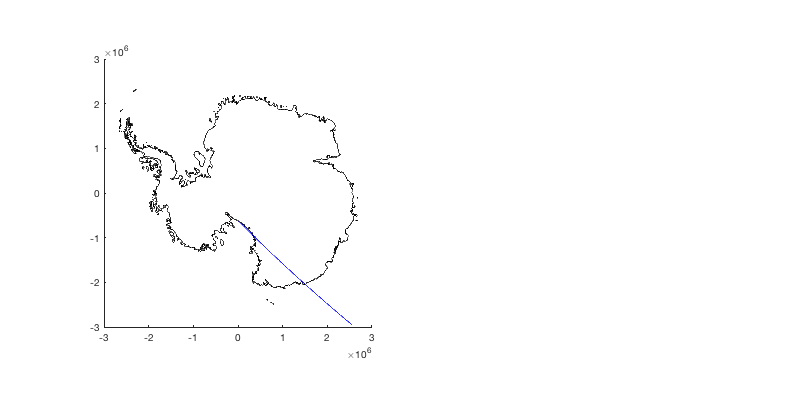
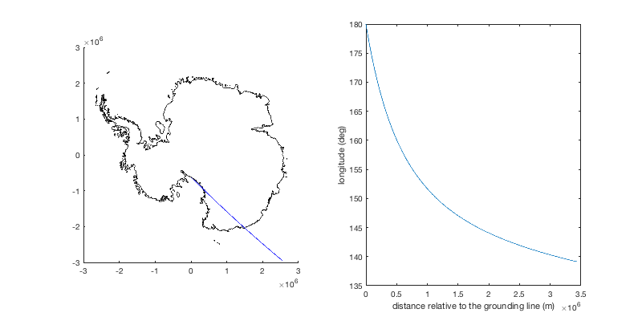
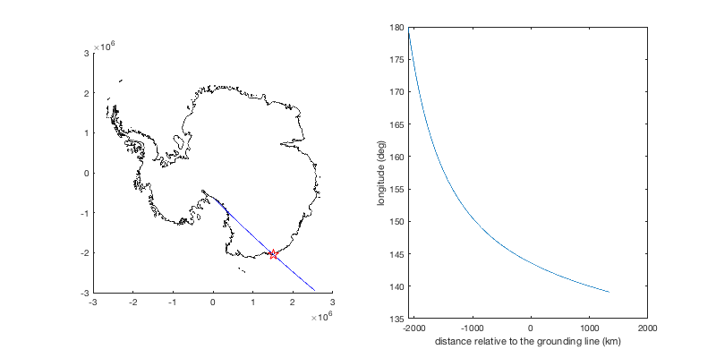

pathdistps documentation
pathdistps is part of Antarctic Mapping Tools for Matlab (Greene et al., 2017). Click here for a complete list of functions in AMT.
The pathdistps returns the cumulative distance along a path in polar stereographic coordinates (true lat 71 S).
Contents
Syntax
d = pathdistps(lat,lon) d = pathdistps(x,y) d = pathdistps(...,'km') d = pathdistps(...,'ref',[reflat reflon]) d = pathdistps(...,'ref',[refx refy]) d = pathdistps(...,'FixDistortion',false)
Description
d = pathdistps(lat,lon) returns the cumulative distance d in meters along the path specified by geo coordinates lat,lon. Coordinates must be vectors of equal size.
d = pathdistps(x,y) returns the cumulative distance d in meters along the path specified by polar stereographic coordinates x,y where x and y are vectors of equal size in ps71 meters.
d = pathdistps(...,'km') simply divides output by 1000 to give distance in kilometers.
d = pathdistps(...,'ref',[reflat reflon]) references the output to the track coordinate nearest to the location given by a two-element vector [reflat reflon]. This might be useful when analyzing distance along a satellite ground track relative to a point of interest such as a grounding line.
d = pathdistps(...,'ref',[refx refy]) references the output as above, but using polar stereogprahic (ps71) coordinates.
d = pathdistps(...,'FixDistortion',false) calculates distances in pure polar stereographic coordinates without accounting for distortion induced by the projection. In Nov 2018, the default behavior changed from 'FixDistortion',false to 'FixDistortion',true meaning distances now reflect true distances rather than distances in the polar stereographic projection.
Examples
Use reftrack from the ICESat reference tracks toolbox and clip to the eastern hemisphere:
% Load reference track: [lat,lon] = reftrack(1304); % Clip to eastern hemisphere: lat = lat(lon>0); lon = lon(lon>0); % Plot for context: figure('position',[100 100 800 400]) subplot(1,2,1) bedmap2('gl','color','black','xy') plotps(lat,lon,'b-')
Calculate the total distance in meters and plot:
d = pathdistps(lat,lon); subplot(1,2,2) plot(d,lon) xlabel 'distance relative to the grounding line (m)' ylabel 'longitude (deg)'
Alternatively, calculate total distance in kilometers, referenced to (66.8575 S, 143.5678 E), which is a point near the ICESat track's intersection with the grounding line:
% Map a red star at the reference point: subplot(1,2,1) plotps(-66.8575,143.5678,'rp','markersize',12) % Calculate distance: d = pathdistps(lat,lon,'km','ref',[-66.8575 143.5678]); subplot(1,2,2) plot(d,lon) xlabel 'distance relative to the grounding line (km)' ylabel 'longitude (deg)'
Citing AMT
If this function or any other part of Antarctic Mapping Tools is useful for you, please cite the paper that describes AMT.
Greene, C. A., Gwyther, D. E., & Blankenship, D. D. Antarctic Mapping Tools for Matlab. Computers & Geosciences. 104 (2017) pp.151-157. doi:10.1016/j.cageo.2016.08.003.
Author Info
This function was written by Chad A. Greene of the University of Texas at Austin Institute for Geophysics (UTIG), April 2016. Updated October 2018 to account for distortion in the polar stereographic projection.